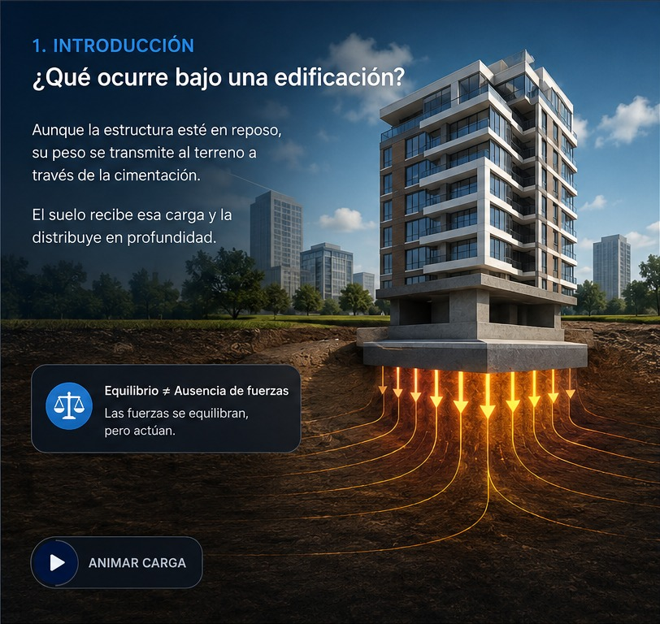

1. INTRODUCCIÓN
¿Qué ocurre bajo una edificación?
Aunque esté en reposo, su peso se transmite a la cimentación y luego al terreno.
Equilibrio ≠ ausencia de fuerzasLas fuerzas se compensan, pero siguen actuando.
Peso propio y cargas aplicadas

Aunque esté en reposo, su peso se transmite a la cimentación y luego al terreno.
Explora cómo cambia σ cuando modificas P y A.
En un suelo homogéneo:
Lectura a 5 m con γ = 18 kN/m³.